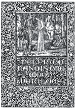
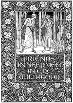
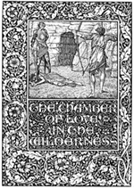

第1部 恋への道
第1章 別れ道
だいぶ昔のこと、小さな国があり、将軍とも小王ともいってよいほどの人がおさめていた。小国ではあったが、ピーター王と呼ばれていた。四人の息子がいて、名をブレイズ、ヒュー、グレゴリー、ラルフといった。末っ子のラルフはまだ二十一度目の冬をむかえただけであったが、長男のブレイズは三十度目の冬をむかえていた。
さて、そのころになると、この若者たちは父の王国が狭苦しいものに思えてきた。他国の人々のくらしぶりを見たいと思い、また命をかけてなにかをすることにあこがれるようになった。王子とはいえ、現世の富はほとんどなかったからである。あるものといえばつぎのようなものぐらいだった。すなわち、おいしい食事と飲み物、それはなに不足なかった。りっぱな住まい、いっしょに楽しめる友人、くちづけをする乙女。それも申し分なかった。それに気のむくままに行き来する自由。頭上の空、それをささえる大地、牧草地と畑、森と清流、それにアプミーズの小高い丘。このアプミーズというのが、その土地と、ピーター王の王国の名前だった。

これくらいしかなかったので、もっと多くのものにあこがれていた。支配できるのは牛馬をのぞけば狭い領地だけだったので、王子としてはなおさら不満だった。なにしろ、その国の民は豪気で反骨の精神をそなえ、専横なふるまいをされたらけっして我慢せず、拳骨をくらえば拳骨で返し、悪口をくらえば拳骨で返すという気風があったのだから。だから、どう考えてみてもピーター王の息子たちがその狭い領地を窮屈に感じたのも無理からぬ話であった。商業都市もなければ鉄壁の城も、壮麗な大修道院もない。あるのはせいぜい自由農民のこぎれいな家か、点在する郷士の邸宅か、紋章つきの盾をもてる騎士のお屋敷ぐらいであった。いくつかの造りのよい教会も、小修道院もあったけれども、そこの修道士はローマへの道筋も、大法官をたずねるすべも知らなかった。

そんなわけで若者たちは長いこと、自分たちの退屈と外の世界へ出かけたいというあこがれを父母に語ってうんざりさせていた。やがてついに六月のよく晴れた暑い午後に、ピーター王が、橋のたもとの聖ヨハネ小修道院の院長からの贈り物である絨毯から起きあがり（王は昼食後に、果樹園の草の上にそれを敷いて昼寝をしていたのだった）、そしてアプミーズの〈お館〉と呼ばれる宮殿の広間へおもむき、四人の息子たちを呼びにやらせた。玉座の前にそろった王子たちに王はこう言った。
「息子たちよ、おまえたちは長いこと、街道に出て旅をしたいという願いばかり申して、わしを悩ませてきた。さて、本気で出かけたいのなら、いつ出発したいかわしに申してみよ。おまえたちが選べるとすればの話じゃが」
四人はたがいに顔を見あわせた。長男のブレイズに弟の三人がうなずいたので、ブレイズが話しはじめた。「わたしたちは父上を、また母上をお慕いし、尊敬申しあげておりますが、昼食がまだ腹でこなれていなくても、いますぐにでも旅立ちたいという思いです。ですが父上はこの国の領主でおられるので、これは父上のお決めになることです。そうだろう、みんな」

すると弟たちはそろって「ええ、そうです」と答えた。これに王はこう返した。「よかろう。いまは真昼で暑い。だが馬を急がせずにゆっくり行っても、夕暮れまでにはどこかの宿場に着くであろう。それではいまから一時間あとに四辻へ来るががよい。そこでおまえたちに出発を命じる」
若者たちはこれを聞いて大喜びし、各人別々になって、簡単な旅支度をした。それから武具をまとい、従士に馬をひいてくるよう頼もうとした。しかし従士たちは王の命によりすでに四辻にむかっていた。それでそこまでは四人一組になり、陽気に笑ったり、話したりしながら歩いていった。